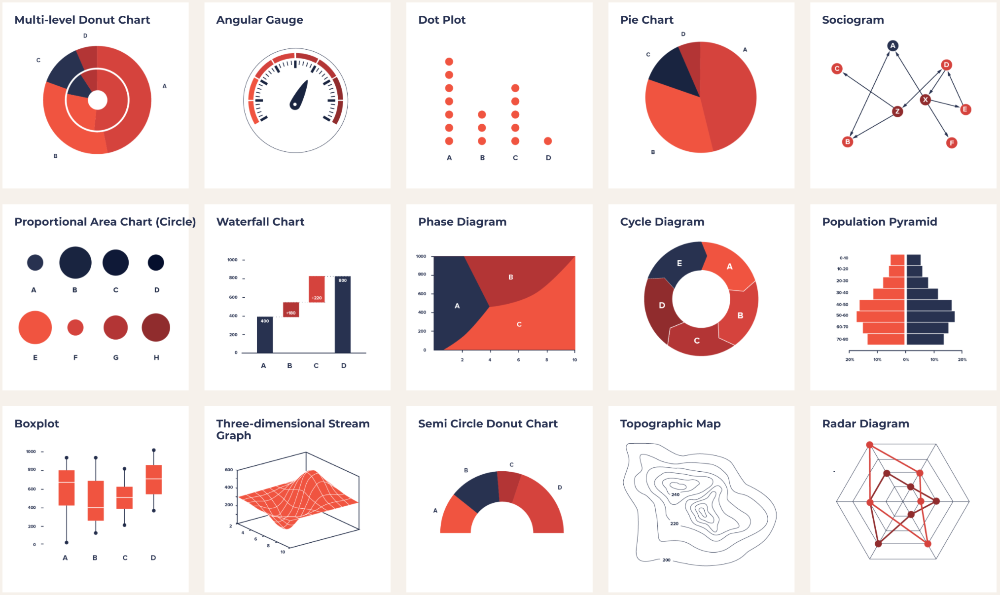

I'm Ibrahim Oksuzoglu and I'm a
About me
Data Analyst with a First-Class Mathematics Degree and strong skills in Python, statistical modelling and experience in predictive analytics, clustering, and sentiment analysis using real-world datasets.
View CVMy Projects
A showcase of Machine learning projects turning complex data into smart predictions.
Optimiser - Fantasy Football
Machine Learning Tools to Predict player scores and optimise player picks to maximise points
Clustering - Football Attributes
Utilising K-Means Clustering to group teams & players with similar profiles for complex comparisons.
Prediction - Football Results
Utilising regression modelling and Machine Learning to predict Football game outcomes.
Sentiment Analysis - Reviews
Using Machine Learning models to predict the sentiment of movie reviews (positive, negative or neutral).
A showcase of interactive dashboards transforming data into clear, actionable insights.
Dashboard - Video Games
Interactive Dashboarding featuring some video games I have played in my lifetime
Dashboard - Match Shots
Dashboard which showcases shots in any Premier League football match with comparison distrubtions
Dashboard - Player Comparison
Interactive dashboarding tool to compare football players statistics
My skills

Statistical Analysis
Applying statistical techniques including A/B tests and hypothesis testing to drive data driven solutions.

Data Visualization
Creating visual representations of data to communicate findings effectively using tools like Power BI.

Databricks Proficiency
Utilising Python and Spark within the Databricks environment for scalable data processing and analysis.
Data Cleaning
Transforming raw data into a usable format by correcting inaccuracies and removing inconsistencies.

Machine Learning
Completed machine learning projects focused on predictive modelling, clustering and sentiment analysis with real-world datasets.